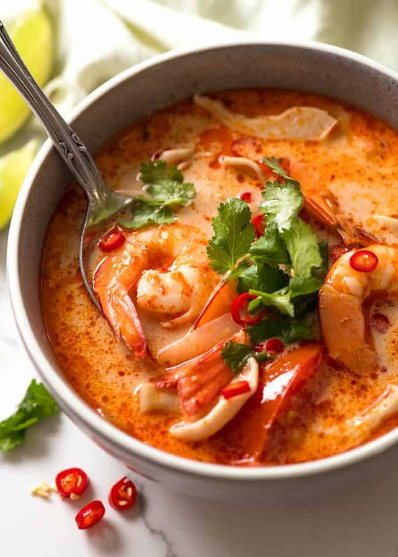
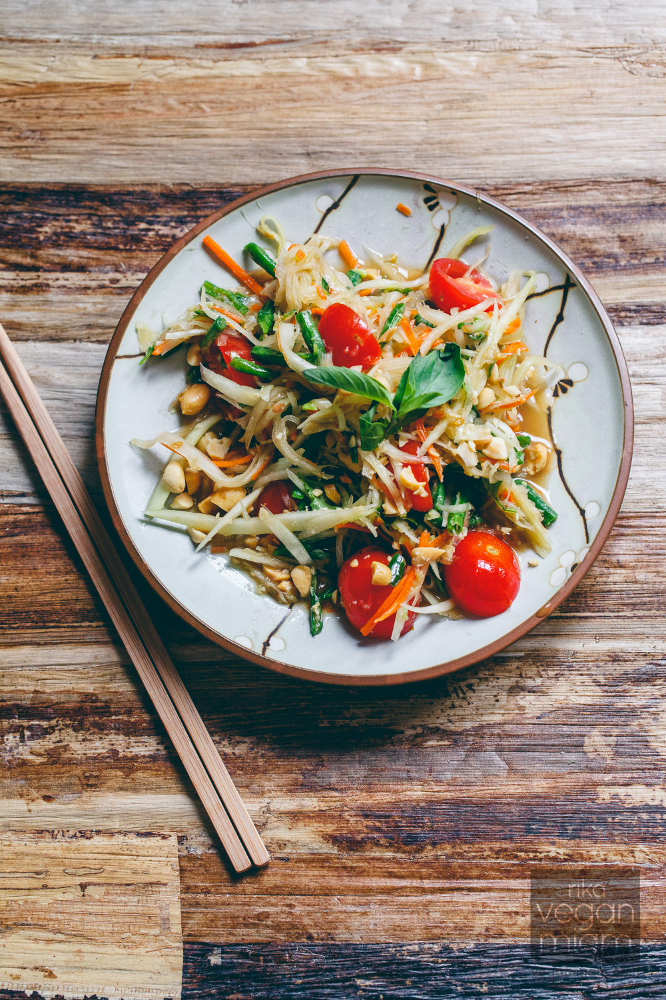
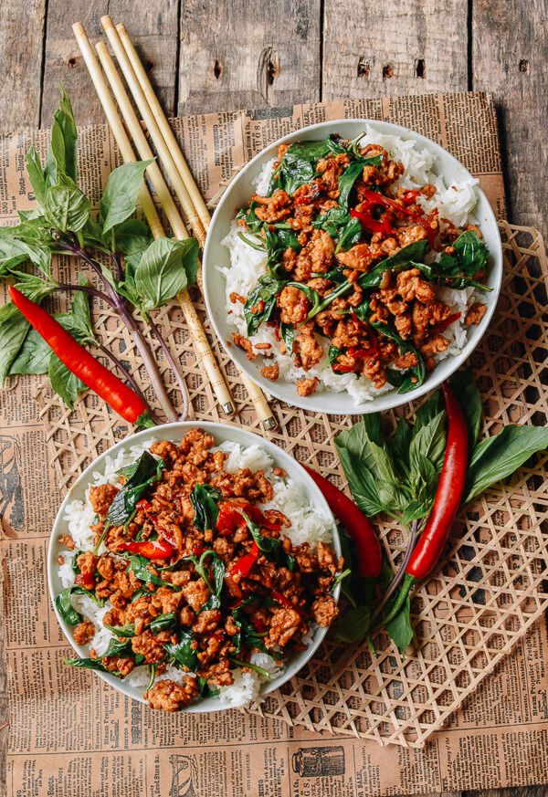
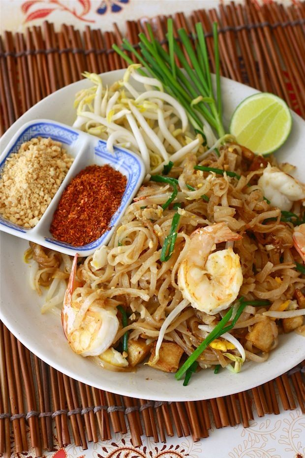
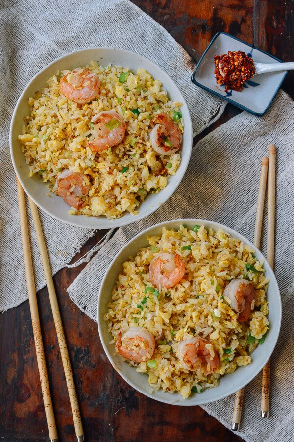
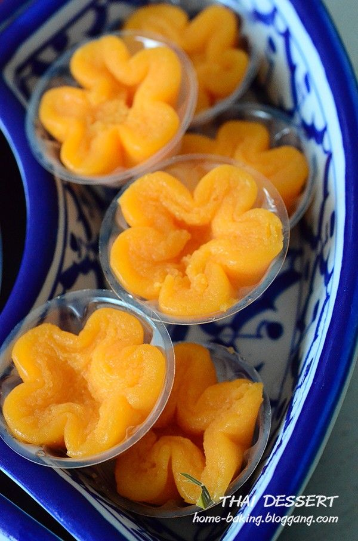
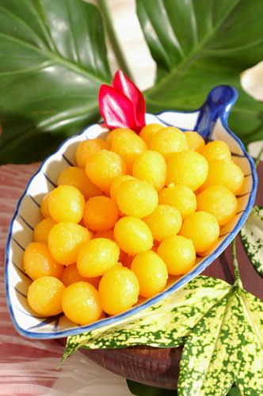
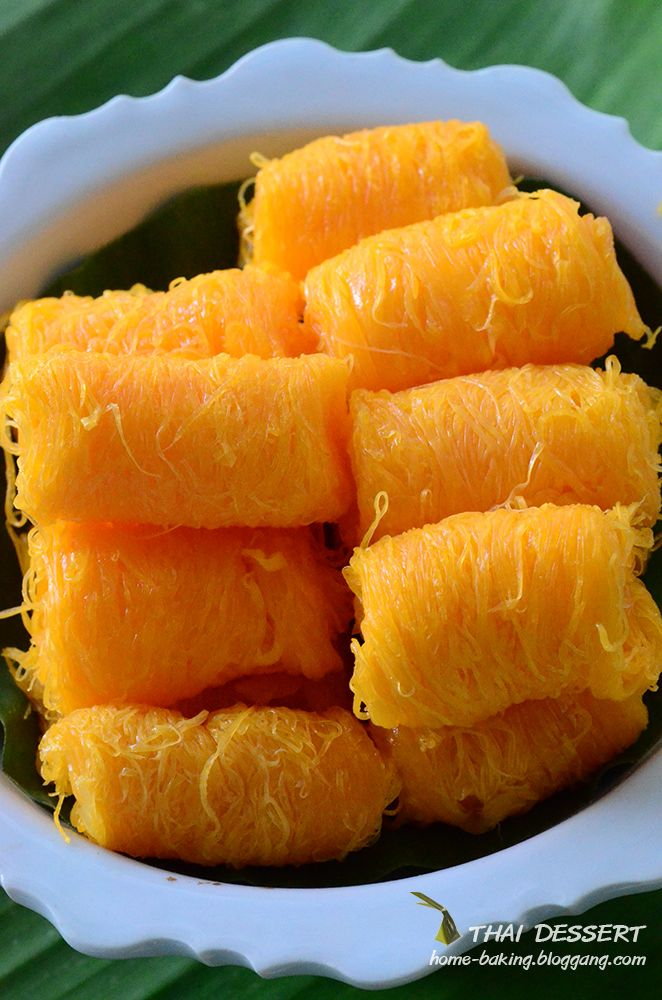
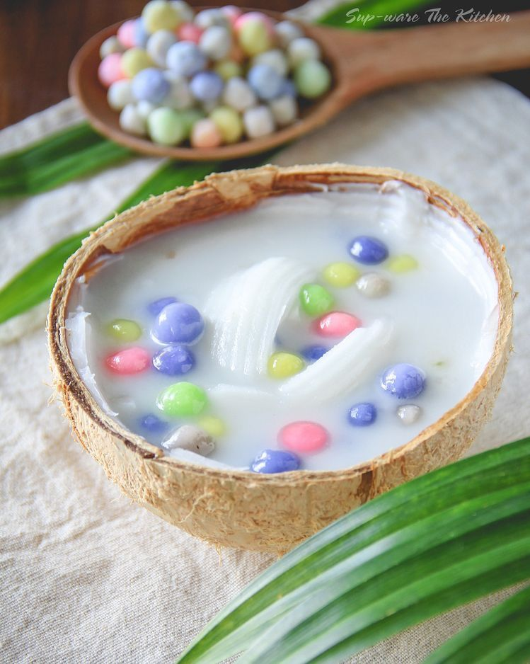
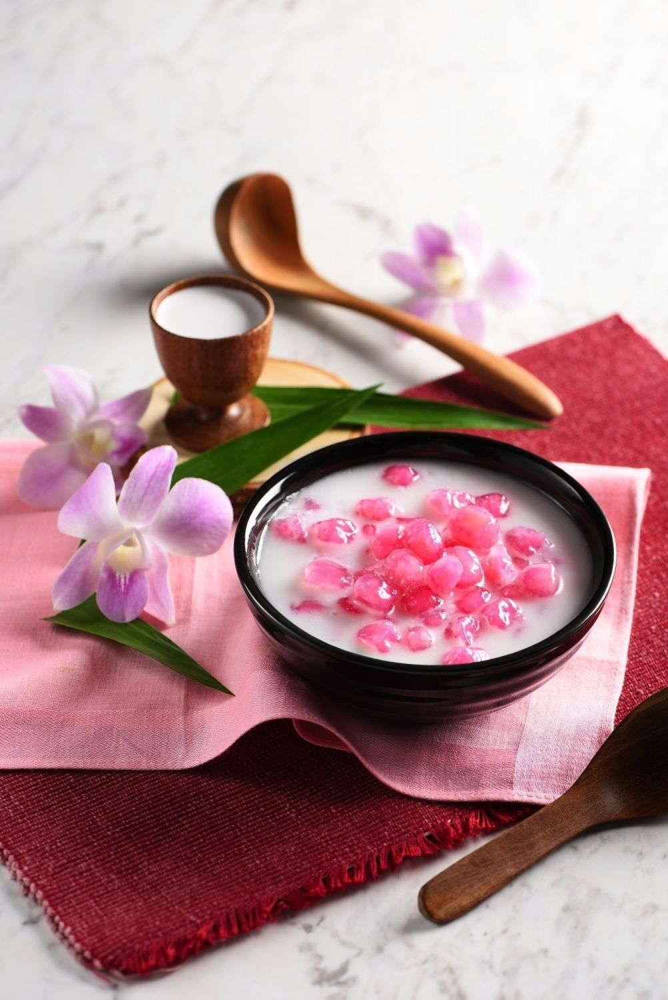

| ภาพ/คำบรรยาย | ชื่อ |
|---|---|

ต้มยำ เป็นแกงไทยที่มีรสเปรี้ยวเผ็ด ต้มยำเป็นอาหารที่รู้จัก และมีชื่อเสียงไปทั่วโลก
คำว่า "ต้มยำ" มาจากคำภาษาไทย 2 คำ คือ "ต้ม" และ "ยำ"
คำว่า "ต้ม" หมายถึง กิริยาเอาของเหลวใส่ภาชนะแล้วทำให้ร้อนให้เดือดหรือสุก
ขณะที่ "ยำ" หมายถึงอาหารลาวและไทยประเภทที่มีรสเปรี้ยวเผ็ด
ดังนั้น "ต้มยำ" คือแกงไทยที่มีความเผ็ดร้อนและเปรี้ยว
อันที่จริงคุณลักษณะของต้มยำมาจากความแตกต่างระหว่างความเผ็ดร้อน ความเปรี้ยว
และกลิ่นหอมของสมุนไพรในน้ำแกง ที่สำคัญน้ำแกงนั้นประกอบด้วย
น้ำต้มกระดูกและเครื่องปรุงส่วนผสมสดได้แก่ ตะไคร้ ใบมะกรูด ข่า น้ำมะนาว น้ำปลา และพริก
|
ต้มยำ |

ส้มตำ เป็นอาหารปรุงมาจากการทำตำส้ม
คือการทำให้เปรี้ยว ในลาวจะเรียกว่าตำหมากหุ่ง
ปรุงโดยนำมะละกอดิบที่สับแล้วฝานหรือขูดเป็นเส้นมาตำในครกเป็นหลัก
พร้อมด้วยวัตถุดิบอื่น ๆ คือ มะเขือเทศลูกเล็ก มะเขือสีดา มะเขือเปราะ พริกสดหรือพริกแห้ง
ถั่วฝักยาว กระเทียม และปรุงรสด้วยน้ำตาลปี๊บ น้ำปลา และมะนาว
|
ส้มตำ |

ผัดกะเพรา เป็นอาหารจานเดียวของไทยที่ได้รับความนิยมมากที่สุดจานหนึ่ง
เป็นอาหารริมทาง อาหารตามสั่งที่มีทั่วไปในประเทศไทย บางครั้งเรียกว่า เมนูสิ้นคิด
เนื่องจากเมื่อจะสั่งอาหารแล้วไม่รู้ว่าจะรับประทานอะไรก็มักจะสั่งผัดกะเพรา
วัตถุดิบประกอบด้วย เนื้อสัตว์ ใบกะเพรา ถั่วฝักยาว พริก กระเทียม บ้างใส่ผักชนิดอื่นลงไปด้วย
เช่น ข้าวโพดอ่อน แครอท หอมหัวใหญ่ เนื้อสัตว์ที่ใช้ในการทำผัดกะเพรา ได้แก่ เนื้อไก่ เนื้อหมู
เนื้อวัว กุ้ง ปลาหมึก หรือแม้แต่ ปลา หอยแมลงภู่ เนื้อปู วิธีการปรุง ใช้วิธีการผัดวัตถุดิบเข้าไปด้วยกัน
มีการปรุงรสด้วยน้ำปลา น้ำตาล บ้างใส่ผงชูรส ซีอิ๊วดำ พริกไทยป่น เติมน้ำสต๊อกพอให้ขลุกขลิก
รับประทานกับข้าวสวย อาจกินด้วยกับไข่ดาว มีน้ำปลาพริกเป็นเครื่องปรุงให้รสหอมและเผ็ดขึ้น
|
กะเพรา |

ผัดไทย (มักสะกดผิดเป็น ผัดไท) เป็นอาหารไทยที่หารับประทานได้ทั่วประเทศไทย
โดยเฉพาะในภาคกลาง และอาจพบได้ในร้านอาหารไทยในต่างประเทศบางแห่ง
ผัดไทยเป็นอาหารที่ได้รับอิทธิพลจากอาหารจีน เดิมเรียกอาหารชนิดนี้ว่า "ก๋วยเตี๋ยวผัด"
และได้รับการเปลี่ยนแปลงด้านรสชาติใหม่ตามอย่างอาหารไทยมากขึ้นในเวลาต่อมา
|
ผัดไทย |

ข้าวผัด เป็นอาหารจานเดียวแบบพื้นฐานของเอเชีย เป็นการนำข้าวสวยลงไปผัดคลุกกับซอส
หรือน้ำพริก หรือเครื่องปรุงรสต่างๆ เพื่อให้ได้รสชาติ เช่น ซอสมะเขือเทศ, ซอสพริก, ซีอิ๊วดำ
หรือซอสถั่วเหลือง และมีการใส่เนื้อสัตว์ชนิดต่างๆ ลงไป เช่น หมู, ไก่, ปลาหมึก, ปู และกุ้ง เป็นต้น
โดยเรียกชื่อข้าวผัดชนิดนั้น ๆ ตามชื่อเนื้อสัตว์ที่ใส่ลงไป และอาจใส่ไข่ลงไปผสมด้วย
หรืออาจโปะไข่ดาวแต่งหน้าเพิ่มเติม สำหรับผักที่ใช้นิยมใช้ผักคะน้าและโรยหน้าด้วยต้นหอมสับ
แต่สำหรับข้าวผัดปูจะไม่ใส่คะน้า
นอกจากนี้ข้าวผัดที่ผัดกับน้ำพริกชนิดต่างๆ ก็อาจเรียกชื่อตามน้ำพริกนั้นๆ
เช่น ข้าวผัดน้ำพริกนรก เป็นต้น
ข้าวผัดนิยมปรุงรสด้วยพริกน้ำปลา และน้ำมะนาวบีบ
|
ข้าวผัด |
| ภาพ/คำบรรยาย | ชื่อ |
|---|---|

ทองหยิบ เป็นขนมโปรตุเกสที่เผยแพร่ในประเทศไทยในสมัยกรุงศรีอยุธยา
โดยท้าวทองกีบม้า จนเป็นที่แพร่หลายมาจนถึงปัจจุบัน ทำจากไข่แดงตีให้จนฟู
ก่อนนำไปหยอดลงในน้ำเชื่อมเดือดเพื่อทำให้สุก เมื่อสุกแล้วจึงนำมาจับจีบ ใส่ถ้วยตะไล
ปัจจุบัน มักใช้เป็นของหวานในงานมงคลต่าง ๆ เช่น งานมงคลสมรส งานขึ้นบ้านใหม่ ฯลฯ
|
ทองหยิบ |

ทองหยอด เป็นขนมโปรตุเกส มีถิ่นกำเนิดจากเมืองอาไวรู(Aveiro)
เมืองชายฝั่งทางตะวันตกเฉียงเหนือของประเทศโปรตุเกส ทำจากแป้งผสมกับไข่แดงและน้ำ
หยอดลงในน้ำเดือดเคี่ยวกับน้ำตาล เมื่อแป้งสุกจะเป็นเม็ดคล้ายหยดน้ำ มีสีเหลืองทอง
ทองหยอดเข้ามาเผยแพร่ในประเทศไทยในสมัยกรุงศรีอยุธยา โดยท้าวทองกีบม้า
ในรัชกาลสมเด็จพระนารายณ์มหาราช
|
ทองหยอด |

ฝอยทอง เป็นขนมโปรตุเกส ลักษณะเป็นเส้นฝอยสีทอง ทำจากไข่แดงของไข่เป็ด
เคี่ยวในน้ำเดือดและน้ำตาลทราย ชาวโปรตุเกสใช้รับประทานกับขนมปัง กับอาหารมื้อหลักจำพวกเนื้อสัตว์
และใช้รับประทานกับขนมเค้ก โดยมีกำเนิดจากเมืองอาไวรู(Aveiro)
เมืองชายฝั่งทางทิศตะวันตกเฉียงเหนือของประเทศโปรตุเกส
ฝอยทองเป็นที่รู้จักในประเทศสเปนว่า อูเอโบอิลาโด, ในประเทศญี่ปุ่นว่า เครังโซเม็ง,
ในประเทศกัมพูชาว่า วาวี, ในประเทศมาเลเซียว่า จาลามัซ และในมาลาบาร์เหนือ
รัฐเกรละ ประเทศอินเดียว่า มุตตามาลา
|
ฝอยทอง |

บัวลอยเป็นขนมไทยที่ทำจากแป้งข้าวเหนียวนำมาปั้นเป็นเม็ดเล็กกลมๆ หนึบนับ
และมีหลากสีที่สวยงาม ลงตัวกับน้ำกะทิที่มีกลิ่นหอมของใบเตย มีรสชาติหวานและเค็มอ่อนๆ
สามารถเพิ่มเนื้อมะพร้าวอ่อนและไข่หวานได้
วิธีธรรมชาติที่สร้างสีสันและเนื้อสัมผัสให้กับเม็ดบัวลอยก็คือการนำผมไม้
ผัก และดอกไม้มาผสมกับแป้งข้าวเหนียว
|
บัวลอย |

ทับทิมกรอบ เป็นขนมไทยที่สามารถรับประทานได้ทุกฤดูกาล นิยมมากที่สุดในฤดูร้อน
รับประทานแล้วหอมหวานเย็นอร่อยชื่นใจคลายร้อนได้ดี ประกอบด้วยเม็ดทับทิมกรอบสีแดง
และเม็ดทับทิมกรอบสีชมพู เมื่อเคี้ยวแล้วกรอบมันด้วยรสชาติของแห้ว มีน้ำเชื่อมที่ทำจากน้ำตาลทราย
ลอยด้วยดอกมะลิ มีกะทิสดจากการคั้นมะพร้าว น้ำแข็งบดละเอียดหรือน้ำแข็งทุบให้เป็นเม็ดเล็ก ๆ
|
ทับทิมกรอบ |